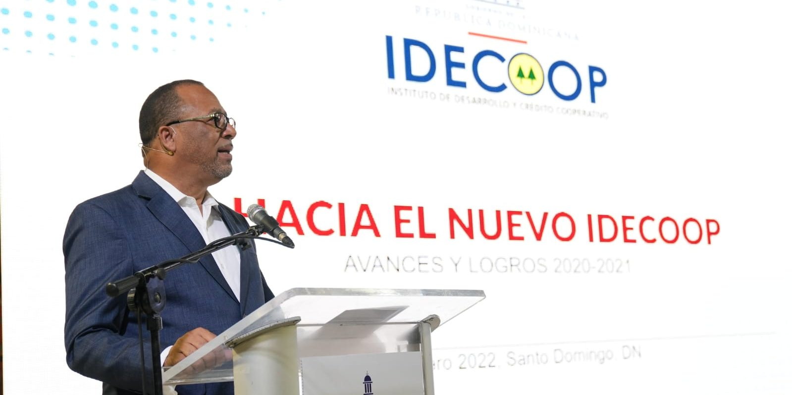
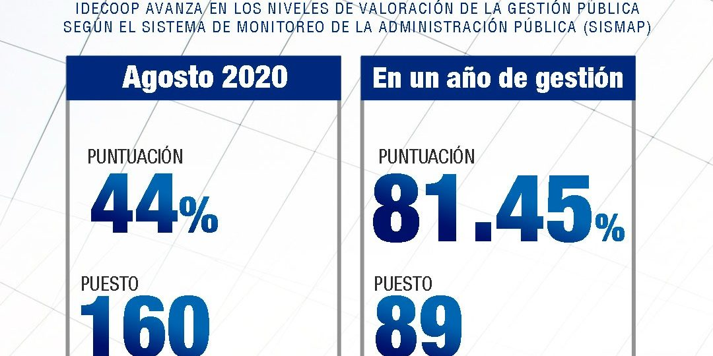

CoopDinámica
!Nuevo! Portal Web
Cooperativa de Ahorros, credito y servicios multiples la dinamica
69 AÑOS DE SERVICIO
Sistema Cooperativismo Dominicano, regido por las leyes No. 3431 sobre asuntos cooperativos y por la No. 127 sobre asociaciones cooperativas.
PERSONAL CAPACITADO
Contamos con expertos en cooperativismo tanto nacionales como internacionales para el acompañamiento, fomento y regularización del cooperativismo en todo el país.
RAPIDEZ Y EFICIENCIA
Con nuestra nuevo portal web, transformamos la metodología en la creación y/o regularización de una nueva cooperativa reduciendo en un 60% el tiempo.
TU DINERO SEGURO
Sistema Cooperativismo Dominicano, regido por las leyes No. 3431 sobre asuntos cooperativos y por la No. 127 sobre asociaciones cooperativas.
Nuestros servicios
Préstamos
Financieros
Ahorros
Personales

Apertura de
Cuenta
Certificado
Financieros
Seguros
Calculadora Web
Puedes realizar tus caculos de CoopDinamic
NOTICIAS RECIENTES

IDECOOP y Poder Ejecutivo entregan 808 certificados de incorporación a nuevas cooperativas
La entrega se enmarca en el programa de Impulso a la Economía Social y Solidaria que lleva a cabo el gobierno del Presidente Luis Abinader, a través del Instituto de Desarrollo y Crédito Cooperativo (IDECOOP). Santo Domingo, D.N. El Poder Ejecutivo encabezado por el Presidente Luis Abinader, y el presidente administrador del Instituto de Desarrollo y
Leer MàsIDECOOP y contrataciones publicas Firman Acuerdo para convertir las cooperativas
Con este acuerdoel IDECOOP avanza en el cumplimiento de la promesa de desarrollo económico que hizo el Presidente de la republica Luis Abinader, de convertir las cooperativas en proveedora del estado para impulsar la economía social y solidaria. Santo Domingo, D.N.- El Instituto de Desarrollo y Crédito Cooperativo (IDECOOP), y la Dirección General de Contrataciones…
Leer Màs
IDECOOP avanza en los niveles de desempeño de la Gestión Pública Web
Santo Domingo, DN.- Por primera vez en varios años el Instituto de Desarrollo y Crédito Cooperativo (IDECOOP), se posiciona dentro de las Instituciones del Estado con desempeño satisfactorio en la Administración Pública. Esto se logró gracias a la gestión del presidente administrador de la entidad, Lic. Franco de los Santos y a cada uno de.
Leer MàsPreguntas Frecuentes
¿Cómo afiliarse?
• Afiliarse es fácil, solo debes llenar el formulario “solicitud de afiliación”, en ambos lados,
anexar copia de tu cedula y tramitarla físicamente o por via WhatsApp, a los siguientes
contactos:
• cooperativaladinamica@gmail.com
• Teléfono y WhatsApp 829-959-0549
• Realizar un pago de RD$1,300 a las cuentas: BPD Ahorros 818479339 y BR cte. 960-288585-6
• La directiva evalúa estas solicitudes y decide aprobación de cada socio.
¿Cuánto pagó cada mes, luego de afiliarme?
• En las mismas cuentas, ya sea vía nomina o por depósitos directos a nuestras cuentas debes mantener un mínimo de aportes y ahorros de RD$700.00, como mínimos.
¿Qué es el San Dinámico?
• Es un sistema de ahorros premiado, similar al que se juega a lo interno de las empresas o
familias, que consiste en fijar una meta de ahorros, por ejemplo: RD$50,000. Se paga cada mes
RD$5,000 durante 10 meses. Solo En la primera cuota, en lugar de RD$5,000 el socio solo paga o
deposita RD$4,000 y la cooperativa le completa los RD$1,000 que faltan a modo de incentivo. Si
no completa los 10 meses y pagos, la cooperativa recupera el incentivo.
• Al finalizar la ultima cuota, el socio recibe la totalidad de las 10 cuotas completas, las
cuales puede convertir en un Certificado de depósitos o simplemente retirarlos
¿Si me descuentan por nómina, puedo hacer otros ahorros y pagos desde mi banco?
• Si, en cualquier momento un socio puede hacer depósitos, aportes o abonos a su cuenta, independientemente de cualquier deposito por nómina.
¿Para pagar o depositar debo ir a sus oficinas?
• No es necesario acudir a nuestras oficinas para realizar depósitos o pagos, ya que NO RECIBIMOS EFECTIVO, todas las transacciones deben hacerse mediante depósitos o transferencias bancarias. Le agregan el concepto, imprimen el volante, lo escanean y nos lo remiten por via electrónica a nuestras oficinas.
¿Como se enteran ustedes de mis pagos por depósitos y transferencias?
• Todas las transacciones deben hacerse mediante depósitos o transferencias bancarias. Le agregan el concepto, imprimen el volante, lo escanean y nos lo remiten por vía electrónica a nuestras oficinas. Para nosotros completar el concepto del movimiento bancario que llega a nuestras cuentas: 8184793639 BPD y BR cte. 960-288585-6.
¿En que tiempo luego de afiliarme puedo tomar prestado?
Las condiciones para tomar préstamos en esta Cooperativa son relativamente sencillas:
• Si perteneces a una Nomina que nos reporta las retenciones, basta con una carta del patrono
garantizando la retención de los pagos y ahorros y ya puedes tomar el equivalente a tus
prestaciones laborales, en adición a otras modalidades que puedes consultar de modo
particular.
• Si tienes al menos un 30% en ahorros, del valor que quieres prestados ahorrados en al menos 6
meses de pagos regulares, también puedes optar por un préstamo y tasas especiales.
• Si cuentas con al menos un 50% de ahorros, del valor que quieres prestado, ahorrados en al
menos 6 a 9 meses de pagos regulares, también puedes optar por un préstamo y tasas más
especiales.
• Desde que te haces socio, si tienes un garante para cubrir el valor que exceda tus ahorros,
puedes obtener un préstamo con dicha garantía.
• En épocas especiales como las Madres, Navidad, Escolaridad, etc. Hacemos campañas de préstamos
donde puede beneficiarse cualquier socio activo en sus aportes y ahorros regulares.
¿Porque en las cuotas del préstamo, ustedes incluyen los ahorros y aportes mensuales?
Como el pago de las cuotas de préstamos deben cumplirse de modo “regular” todos los meses, nosotros aprovechamos esa circunstancia parra incluir en esas cuotas, el ahorro mínimo o acordado con el socio, de modo que luego de obtener el préstamo se mantenga al día con el pago de su préstamo, también se mantenga activo mediante el pago de sus aportes y ahorros, y lo mas importante, que al saldar el préstamo, el socio disponga de unos ahorros adicionales, que va acumulando, casi imperceptiblemente.
¿Por qué ustedes tienen 3 tasas de interés para los préstamos?
• Es una política de la Cooperativa, manejarse en estos primeros años con una tasa que nos
permita, no solo capitalizarnos, sino también cubrir el costo de nuestras operaciones: Local,
Software, internet, empleados, costos financieros, costos bancarios, etc. Que hoy es de un 2.5%
mensual.
• Al socio que ya cuenta con aportes y ahorros equivalentes al 30% del monto del préstamo, le
rebajamos de un 2 a un 3% anual a dicha tasa.
• Al socio que ya cuenta con aportes y ahorros equivalentes al 50% del monto del préstamo, le
rebajamos de un 3 a un 6% anual a la tasa original.
¿Cada que tiempo ustedes revisan la tasa de mi préstamo?
• Aunque nuestro departamento legal nos exige ser prudentes, al igual que la banca, incluyendo en nuestros contratos la revisión cada 6 meses de acuerdo al mercado. Sin embargo, por ahora y en los próximos años, hemos mantenido la decisión administrativa de No Variar las Tasas durante las vigencias de los préstamos, a modo de llevar tranquilidad a nuestros socios, sabiendo que sus cuotas de préstamo No Cambian, mientras dure el acuerdo pactado.
¿Qué es una nómina afiliada?
• Una Nomina Afiliada, es cuando el propietario o encargado de un negocio con varios empleados asume voluntariamente la decisión de hacer descuentos y retenciones de las cuotas, aportes y ahorros de los empleados asociados a la cooperativa. Esto le otorga el privilegio a la empresa y a los empleados que gozan de privilegios al momento de otorgar préstamos y al momento de premiar o rifar incentivos al final de año.
¿Tiene alguna ventaja el estar en una nómina afiliada?
• Claro que sí, cuando perteneces a una nómina afiliada, prácticamente de inmediato, te podemos facilitar préstamos en base a la sumatoria de tus ahorros y de las prestaciones laborales, que el socio autorice a su patrono que servirán de garantía para lograr un préstamo con nosotros. También hacemos una premiación especial al final de año, a cada uno de los grupos de cada Nomina Afiliada, independientes de los boletos basados en ahorros y préstamos pagados en el año.
¿Si pertenecía a una nómina y dejó ese empleo, debo salir de la cooperativa?
• La membresía de cada socio es Individual e Independiente del lugar donde trabaje. Por tanto, si cambia de trabajo, no tiene la necesidad de salir o terminar sus vínculos con la cooperativa. Muy por el contrario, en esos casos en que se mantienen a pesar de salir de la empresa y la nómina, la cooperativa valora la persistencia de dicho socio.
¿El que tiene muchos aportes, tiene más votos que yo?
• No. Todos los socios activos, cuentan con un solo voto en las Asambleas y reuniones de la Cooperativa. Sin embargo, los socios que realizan aportes por encima del promedio general son considerados socios estratégicos, en vista de que muestran su confianza en la Cooperativa, haciendo aportes que fortalecen el patrimonio cooperativo, lo cual nos permite disponer de fondos propios para prestarlos a los socios que necesitan recursos.
¿Como la cooperativa consigue dinero para prestarnos?
• La primera fuente de recursos o fondos que obtiene la cooperativa son los aportes, que
equivalen a lo que serian “acciones” en una empresa comercial. Por eso al afiliarse se exigen
RD$1,000 de aportes y luego RD$700.00 mensuales, que incluyen RD$500 de aportes y el resto de
ahorros.
• La segunda fuente de fondos, son los “Bonos de Capitalización”, estos bonos tienen la
intención de acelerar la disponibilidad de fondos para prestarlo a los socios, en vista de la
lentitud natural en la captación de los aportes. Estos bonos pagan un 6% anual y no penalizamos
al socio cuando decide liquidarlos antes de los 6 meses o el año, que se asume cuando son
creados.
• La tercera fuente de recursos, son los “Bonos CFCD”, que son unos bonos en múltiplos de
RD$650,000. Con un mínimo de duración de 6 meses renovables, con tasas que parten del 12% hasta
un 20% anual, dependiendo del volumen que acumule cada socio en su cartera de inversión. Estos
bonos se emiten cuando surgen propuestas de negocios de: “Compra de Facturas con descuentos”;
Líneas de Créditos o Grandes préstamos que requieren de fondos extraordinarios.
• La cuarta fuente de fondos, proviene de los excedentes de nuestras operaciones entre lo que
pagamos por los ahorros, el costo de nuestras operaciones y lo que cobramos a nuestros socios y
clientes.
• No hemos recibido donaciones directas, aún.
¿Qué es un Bono de capitalización?
• Es un bono especial, múltiplo de RD$10,000, similar a un certificado financiero, que se emite por periodos de 6 meses a un año. Sirve para acelerar la disponibilidad de capital de trabajo para prestar a nuestros socios.
¿Cuánto me pagan por un bono de $10,000?
• A la fecha estamos pagando un 6% anual por estos bonos.
¿Para grandes préstamos, cómo consigue fondos la cooperativa?
• Creamos unos Bonos Especiales, en múltiplos de RD$650,000. A un mínimo de 6 meses, renovable y premiamos el cumulo de estos Bonos, luego de acumular mas de 4 Bonos, se incrementan las tasas anuales. Los intereses se pagan mensualmente, pero en una cuenta de ahorros en la misma cooperativa, condicionado a solo retirar el 80% de los intereses acumulados, al cumplir 61 días de haberlos pagado.
¿Cuándo ha habido crisis, porque la cooperativa no nos exonera de las cuotas o de los intereses?
• La cooperativa no recibe donaciones del Estado, ni de los socios. Tiene una primera
responsabilidad que es cuidar los ahorros y depósitos de los socios. Pagando religiosamente los
intereses que ganen los mismos por sus depósitos y bonos.
• La segunda responsabilidad es “cubrir los costos de sus operaciones”: Local, Software,
internet, empleados, costos financieros, costos bancarios, etc. No solo cubrir
estos costos,
sino generar excedentes o ganancias para capitalizarnos o para distribuir entre los
socios.
• Entonces, si nosotros exoneráramos los intereses que son los recursos conque se pagan los
intereses y los costos operacionales, pondríamos en crisis financiera a la empresa de todos que
es la cooperativa.
• En pocas palabras: De los intereses que cobramos, es que pagamos los
intereses de los socios
que ahorran; los salarios de empleados, local, Sw, comunicación, etc.
¿Con ingresos mínimos se puede ahorrar?
Si, se puede. Si nos lo proponemos, con cualquier ingreso se pueden ahorrar doscientos a cuatro pesos al mes, no importa el sacrificio. Ya que el primer obstáculo para el ahorro es crear el habito, la consistencia, la perseverancia. Luego que ya lo has hecho durante un año, entonces se van creando estímulos a metas mayores, se le da un nombre o un propósito a dicho ahorro.